충남대학교 컴퓨터공학과 이성호 교수님의 "프로그래밍 언어 개론" 강의를 필기한 내용입니다.
다소 잘못된 내용과 구어적 표현 이 포함되어 있을 수 있습니다.
명령형 언어
- 명령형 언어(Imperative Language) 는 메모리의 상태를 바꾸는 명령들을 통해 프로그램을 구성하는 언어
- 즉, 명령을 하나씩 실행할때마다 메모리의 상태가 바뀌며 프로그램이 모두 실행되면 최종 상태가 됨
- C / C++, Java등이 해당됨
- 일반적으로 Statement를 지원하는 언어는 모두 명령형언어이다
- 함수형 언어는 보통 명령형 언어는 아니지만 반대개념은 아니다
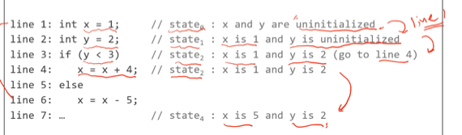
- 이걸 보면 한문장이 실행될때마다 메모리의 상태가 바뀌는 것을 알 수 있다
- if문도 expression인 조건식으로 특정위치로 분기한 다음 statement가 실행되는 것을 알 수 있다
MiniC
- 이번 수업에서 정의하는 C언어의 축소판
- Untyped, Interpreted Language 로 정의해본다
- 따라서 타입에러에 대한 런타임 에러가 날 수 있음
Concrete Syntax
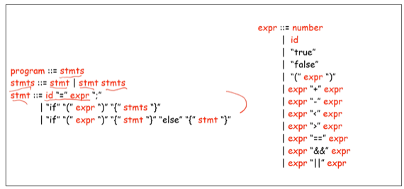
- 뭐 별거 없다
Abstract Syntax
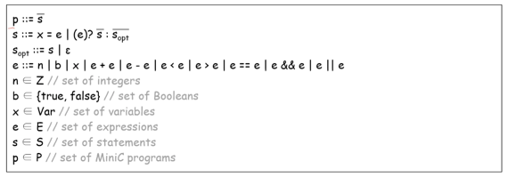
- 알파벳 위에 바 가 있는 것은 그냥 그게 여러개 있다(list이다)라고 생각하면 된다
- s는 변수할당(x = e)과 분기문 (e ? s : s-opt)으로 구성되고
- s-opt는 false branch를 지원하기 위한 것으로 s가 있을수도 있고 없을수도 있다는 것이다
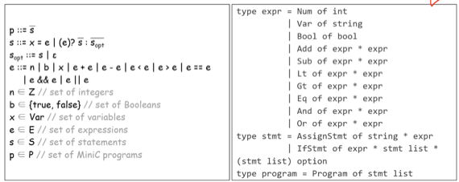
- 이렇게 오른쪽으로 코드로 바꿔보는거 할 줄 알아야 한다 - 시험각
- option은 ocaml에서 지원하는 타입으로 앞에꺼가 있을수도 있고 없을수도 있다는 소리이다
Value Domain
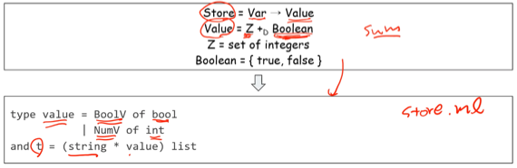
- 별거 없쥬?
- 다만 여기서도 코드로 바꾸는 거 알아놔야 된다 - 여기서는 and를 사용하지 않지만 and를 어떻게 사용하는지도 알아놓자
Semantics
- Imperative Language의 경우 statement가 실행되면 메모리의 상태 전이가 일어나므로 statement는 메모리의 상태를 어떻게 전이시키는지를 명시하는 것으로써 Semantics를 작성할 수 있다
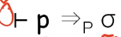
- Program Semantics : program을 전부 실행한 후의 메모리 상태 (“ → P” 로 표현)
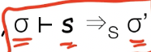
- Statement Semantics : statement 실행 시 변화된 추상 메모리 (“ → S “ 로 표현)
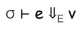
- Expression Semantics : 현재의 메모리 상태에서 expression이 계산되는 값 (“ 아래화살표 E “로 표현)
Bigstep Operational Semantics
- 나머지는 다 배운거고
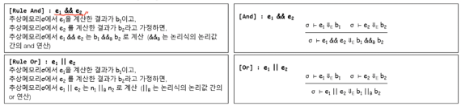
- AND와 OR는 저렇게 &&B, ||B 의 논리값 연산자를 통해 표현된다는 것
- 저기 오타는 적당히 알아듣도록
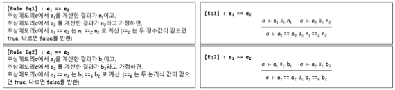
- equal to의 경우에는 정수간의 equal to 연산과 boolean간의 equal to 두개로 나눠서 표현한다
- 따라서 정수와 논리값 간의 equal to 의 경우에는 런타임 에러가 나도록 처리한다
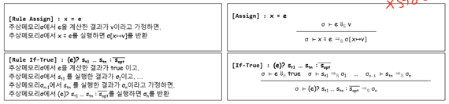
- Statement의 경우에는 ” → S “ 를 이용해 메모리의 변화로 표현한다
- 위에 등장하는 If는 e가 True로 계산될때의 Branch 이다
- 따라서 보면 True Branch의 statement들이 하나씩 실행될때마다 추상메모리가 변화하고 마지막의 최종 메모리가 이 If문의 결과 메모리가 되는 것
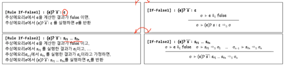
- False의 경우에는 False Branch가 존재할 수도 있고 존재하지 않을 수도 있기 때문에 위처럼 두개로 나눠서 표현된다
- 첫번째는 False Branch가 없을때의 얘기로 이때에는 메모리 상태가 전이되지 않는다
- 그리고 두번째는 False Branch가 존재할때의 얘기로 이때에는 True Branch일때처럼 하나씩 계산해서 마지막까지 계산했을 때의 메모리 상태가 최종상태가 되는 것
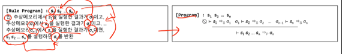
- 그리고 Program은 Statement의 list이므로 빈 메모리에서 시작해서 최종 메모리로 끝나는 연산으로 표현된다
Optional Value in OCaml
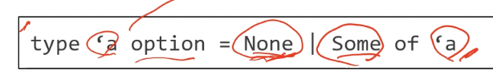
- 보면 ’a option 이라는 타입은 아무것도 없음을 나타내는 None과 하나가 존재한다는 Some으로 구성되어 있으며
- 뭐 pattern matching으로 None와 Some을 매치시켜 사용하면 될듯
- 값이 없음을 뜻하는 NULL과 유사하나 예기치 않은 오류가 날 수 있기 때문에 값이 있을수도 있고 아닐수도 있는 경우에는 이렇게 옵션으로 처리하는 것이 좋다